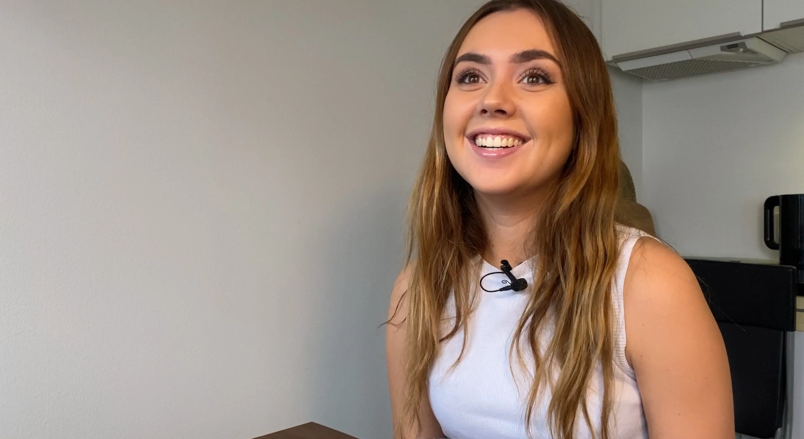

En frisørs verden
En dag med Johanne Bak Scheel
Hvad trigger en frisør til at vælge denne profession, og kan det mon
have nogle konsekvenser?
Mød Johanne som har passion for kreativitet, og sætter drømmene
højt.

Frisørelev hos Stender
Under Corona pandemien, begyndte Johanne at lege og eksperimentere med både sit eget, samt veninders hår. Der gik ikke lang tid før hun fandt fandt ud af at det var det hun ville bruge sin fremtid med, og søgte derefter ind på frisør skolen. Med kun et enkelt års erfaring som frisør, og hos Stender på strøget, er hun ikke i tvivl om vejen foran hende, "I fremtiden drømmer jeg om at komme ind for filmbranchen og være med til at style. Skuespillere og sætte hår, jeg kan helt vildt godt lide at lege med vilde styles" udtrykker Johanne. På nuværende tidspunkt er det vigtigste dog bare for Johanne at være en del af fællesskabet hos Stander, hvor hun er meget begejstret for hele tiden at lære noget nyt.